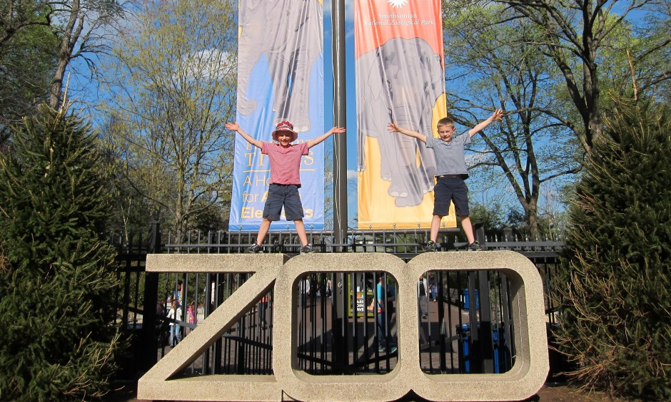

Image Source: By Davina S.
Here you will find a link to what we have on display by clicking on the Display button on the top of the page, or at the end of this paragraph. Making donations always helps us to keep the animals environment, living conditions clean and regularly maintained. This also helps us with medical and dental cost as well as proving meals. The donations help us not only care for the animals we have but take in new animals that need a safe home. You may donate to the animal of your choice. We have several animals to show you. The following animals are animals that we currently have in our facility:
I hope you find this page intresting and get some information about our animals and head down just to see these unique magnificient Animals on Displays. All donations would be really apprciated this would help us maintain a healthy environment for them and provide them with the care they need. If you would like to make a donation you can click on the link or you can go to the top of the page. I hope you like this page if you do please sign up for our news letter on the donation page.